当店サイズ採寸方法についてご案内
ヌード寸法は実際の体の寸法を計測した商品を作るための基準寸法であり、商品の実寸法(仕上がり寸法)とは異なります。
【ヌード寸法＋着用ゆとり分＝実寸法(仕上がり寸法)】
また、当店の商品には下げ札にヌード寸法記載のある商品もございます。
※日本では「日本工業規格（JIS）」でヌード寸法が決められています。以下の表は、JIS基準によるヌードサイズ対応表です。
※こちらのヌード寸法表は、JIS基準によるサイズ対応表です。 実際の商品の実寸・サイズ記号は、各商品ページよりご確認ください。 ・表記サイズは当店スタッフによる実寸での測定、もしくはメーカーによる生産サイズ（実寸）を記載しております。
(測る場所によって多少の誤差がございます。)
・商品の採寸の仕方は下記をご参考いただき、ご注文前に必ずご確認ください。
(ギャザー・プリーツ・タックなど加工の入ったデザインは、加工部分を伸ばさずに採寸しております。)
【ヌード寸法＋着用ゆとり分＝実寸法(仕上がり寸法)】
また、当店の商品には下げ札にヌード寸法記載のある商品もございます。
| ヌード寸法の測り方 | |
| トップバスト | ブラジャーを着用した状態で胸の一番高い位置の周囲を水平にして測ります。 |
| アンダーバスト | バストのふくらみのすぐ下の周囲を水平にして測ります。 |
| ウエスト | お腹の一番くびれた部分の周囲を水平にして測ります。 |
| ヒップ | ヒップの一番高い位置、もしくは腰の一番大きい位置の周囲を水平にして測ります。 |
※日本では「日本工業規格（JIS）」でヌード寸法が決められています。以下の表は、JIS基準によるヌードサイズ対応表です。
| ヌード寸法表：レディース S-5Lサイズ記号(単位cm) | |||||||
| JIS規格サイズ | S | M | L | XL | XXL | 3XL | 4XL |
| 身長(標準) | 154～162cm | ||||||
| バスト | 72-80 | 79-87 | 86-94 | 93-101 | 100-108 | 107-115 | 114-122 |
| ウエスト | 58-64 | 64-70 | 69-77 | 77-85 | 85-93 | 93-101 | 101-109 |
| ヒップ | 82-90 | 87-95 | 92-100 | 97-105 | 102-110 | 107-115 | 112-120 |
| ヌード寸法表：レディース 58-76 ウエストサイズ記号(単位cm) | |||||||
| JIS規格サイズ | 58 | 61 | 64 | 67 | 70 | 73 | 76 |
| ウエスト | 58 | 61 | 64 | 67 | 70 | 73 | 76 |
| ヒップ | 87 | 89 | 91 | 93 | 95 | 97 | 99 |
※こちらのヌード寸法表は、JIS基準によるサイズ対応表です。 実際の商品の実寸・サイズ記号は、各商品ページよりご確認ください。 ・表記サイズは当店スタッフによる実寸での測定、もしくはメーカーによる生産サイズ（実寸）を記載しております。
(測る場所によって多少の誤差がございます。)
・商品の採寸の仕方は下記をご参考いただき、ご注文前に必ずご確認ください。
(ギャザー・プリーツ・タックなど加工の入ったデザインは、加工部分を伸ばさずに採寸しております。)
| 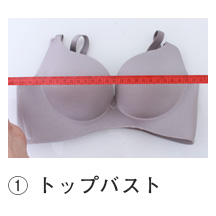 |
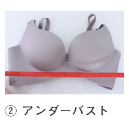 |
| ブラジャー | |
| トップバスト | ブラジャーを着用した状態で胸の一番高い位置の周囲を水平にして測ります |
| アンダーバスト | バストのふくらみのすぐ下の周囲を水平にして測ります。 |
| 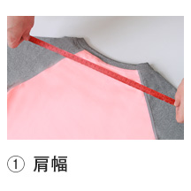 |
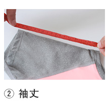 |
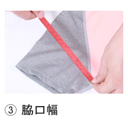 |
| 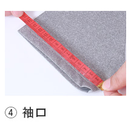 |
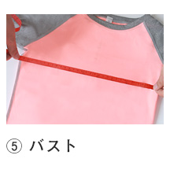 |
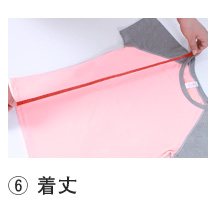 |
| 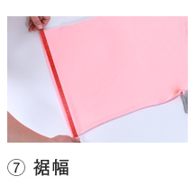 |
||
| トップス | |
| 【肩幅】 | 左右の肩先の縫い目から縫い目まで。 |
| 【袖丈】 | 肩先から袖口まで。 |
| 【袖口】 | 袖口部分の幅を直線で測り、 2倍した値。 |
| 【 バスト】 | 両脇の付け根から付け根を 直線で測り、２倍した値。 |
| 【着丈】 | ネックポイントから裾まで。 |
| 【裾幅】 | 裾の1番下の部分を測った値。 |
| 【アームホール】 | 肩先から袖の付け下までを 直線で測り、2倍した値。 |
| 【二の腕まわり】 | 袖山から脇下までを直角に直線で測り、2倍した値。 |
| 【裾まわり】 | 裾の一番下の両端を直線で測り、 2倍した値。 |
| 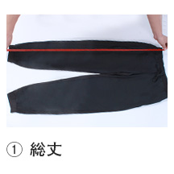 |
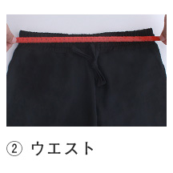 |
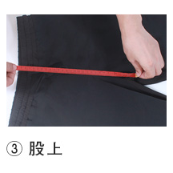 |
| 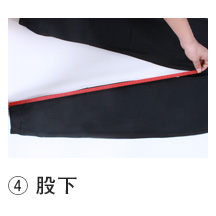 |
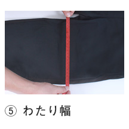 |
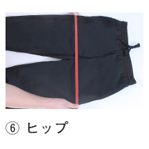 |
| 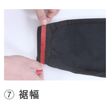 |
||
| パンツ | |
| 【総丈】 | ウエスト先端から裾までを直線で測った値。 |
| 【ウエスト】 | 前と後ろがずれない様に合わせて 直線にし、端から端を測って ２倍にした値。 |
| 【股上】 | 内股合わせの部分から後面を ウエストの一番上まで測った値。 |
| 【股下】 | 平らな場所に縫い目が真ん中に 来るようにおいて、付け根の２本の ステッチの中央から裾までを 測っています。 |
| 【わたり幅】 | 足の付け根部分を裾に平行に 測った値。 |
| 【ヒップ】 | 内股合わせから8ｃｍ上の部分を 平行に測って２倍した値。 |
| 【裾幅】 | 裾の1番下の部分を測った値。 |
| 【膝幅】 | ウエストから45ｃｍ下の部分を 裾に平行に測った値。 |
|
ご購入商品がお手元に届きましたら、ご注文内容とお届け商品に不備がないか【商品番号・サイズ・カラー・数量】等の ご確認をお願いいたします。 |
お気に入りの衣類をより長く快適に着ていただくために、衣類の裏側や縫い代の部分に付いているこの洗濯表示マークを確認してから
洗濯していただくことをおすすめします。
洗濯していただくことをおすすめします。
| 洗い方 | |||
 |
液温は95℃を限度とし、洗濯機で通常の洗濯処理ができます。 |  |
液温は70℃を限度とし、洗濯機で通常の洗濯処理ができます。 |
 |
液温は60℃を限度とし、洗濯機で通常の洗濯処理ができます。 |  |
液温は60℃を限度とし、洗濯機で弱い洗濯処理ができます。 |
 |
液温は50℃を限度とし、洗濯機で通常の洗濯処理ができます。 |  |
液温は50℃を限度とし、洗濯機で弱い洗濯処理ができます。 |
  |
液温は40℃を限度とし、洗濯機による洗濯ができます。 |   |
液温は40℃を限度とし、洗濯機で弱い洗濯処理または弱い手洗いで洗濯できます。 |
 |
液温は40℃を限度とし、洗濯機で非常に弱い洗濯処理または非常に弱い手洗いで洗濯できます。 |  |
液温は40℃を限度とし、洗濯機の弱水流または弱い手洗いで洗濯できます。水洗いは洗濯ネットを使用してください。 |
 |
液温は40℃を限度とし、洗濯機による洗濯ができます。洗濯ネットを使用してください。 |  |
液温は30℃を限度とし、洗濯機で通常の洗濯処理ができます。 |
  |
液温は30℃を限度とし、洗濯機で弱い洗濯処理または弱い手洗いで洗濯できます。 |  |
液温は30℃を限度とし、洗濯機で非常に弱い洗濯処理または非常に弱い手洗いで洗濯できます。 |
 |
液温は30℃を限度とし、洗濯機による洗濯ができます。洗濯ネットを使用してください。 |  |
液温は30℃を限度とし、洗濯機の弱い洗濯処理または弱い手洗いで洗濯できます。水洗いは洗濯ネットを使用してください。 |
 |
液温は30℃を限度とし、洗濯機の弱い洗濯処理または弱い手洗いで洗濯できます。中性洗剤・洗濯ネットを使用してください。 |  |
液温は30℃を限度とし、弱い手洗いで洗濯してください。洗濯機は使用できません。 |
 |
液温は30℃を限度とし、中性洗剤を使用し 弱い手洗いで洗濯してください。 洗濯機は使用できません。 |
 |
液温は30℃を限度とし、洗濯用ネットに洗濯物を入れて、弱い手洗いで洗濯してください。洗濯機は使用できません。 |
 |
液温は30℃を限度とし、弱い手洗いで 押し洗い、短時間で洗濯してください。 洗濯機は使用できません。 |
 |
液温は40℃を限度とし、手洗いによる洗濯処理ができます。 |
  |
水洗いは洗濯機、手洗いともできません。 |  |
液温は30℃を限度とし、中性洗剤を使用し、洗濯用ネットに洗濯物を入れて、弱い手洗いで洗濯してください。洗濯機は使用できません。 |
| 塩素漂白の可否 | |||
  |
塩素系漂白剤による漂白ができます。 |   |
塩素系漂白剤による漂白はできません。 |
 |
漂白処理はできません。 | ||
| タンブル乾燥処理の可否 | |||
 |
洗濯処理後のタンブル乾燥処理ができます。高温乾燥：排気温度の上限は最高80℃ |  |
洗濯処理後のタンブル乾燥処理ができます。低温乾燥：排気温度の上限は最高60℃ |
 |
洗濯処理後のタンブル乾燥処理はできません。 | ||
| アイロンの掛け方 | |||
 |
アイロンは210℃を限度とし、180℃～210℃でかけてください。 |  |
底面温度 200℃を限度としてアイロンをかけてください。 |
 |
アイロンは160℃を限度とし、140℃～160℃でかけてください。 |  |
底面温度 150℃を限度としてアイロンをかけてください。 |
 |
アイロンは120℃を限度とし、80℃～120℃でかけてください。 |  |
底面温度110℃を限度としてスチームなしでアイロンをかけてください。 |
 |
当て布を使用してかけてください。 |  |
アイロンは210℃を限度とし、180℃～210℃で 当て布を使用してかけてください。 |
 |
アイロンは160℃を限度とし、140℃～160℃で 当て布を使用してかけてください。 |  |
アイロンは120℃を限度とし、80℃～120℃で当て布を使用してかけてください。 |
  |
アイロンがけはできません。 | ||
| ドライクリーニング | |||
  |
ドライクリーニングができます。 溶剤はパークロロエチレン又は石油系のものを使用してください。 |
 |
ドライクリーニングができます。 溶剤はパークロロエチレン又は石油系のものを使用してください。（弱い処理で） |
  |
ドライクリーニングができます。溶剤は石油系のものを使用してください。 |  |
ドライクリーニングができます。溶剤は石油系のものを使用してください。（弱い処理で） |
  |
ドライクリーニングはできません。 |  |
ドライクリーニングはできません。 溶剤は、石油系以外のものを使用してください。 |
| ウエットクリーニング | |||
 |
ウエットクリーニング処理ができます。 （通常処理） |
 |
ウエットクリーニング処理ができます。 （弱い処理） |
 |
ウエットクリーニング処理ができます。 （非常に弱い処理） |
 |
ウエットクリーニング処理ができません。 （弱い処理） |
| 絞り方 | |||
 |
手絞りの場合は弱く、遠心脱水の場合は、
短時間で脱水してください。 |
 |
絞ってはいけません。 |
| 干し方 | |||
  |
吊り干しをしてください。 |   |
平干しをしてください。 |
  |
日陰で吊り干しをしてください。 |   |
日陰で平干しをしてください。 |
 |
ぬれ吊り干しをしてください。 |  |
ぬれ平干しをしてください。 |
 |
日陰でぬれ吊り干しをしてください。 |  |
日陰でぬれ平干しをしてください。 |